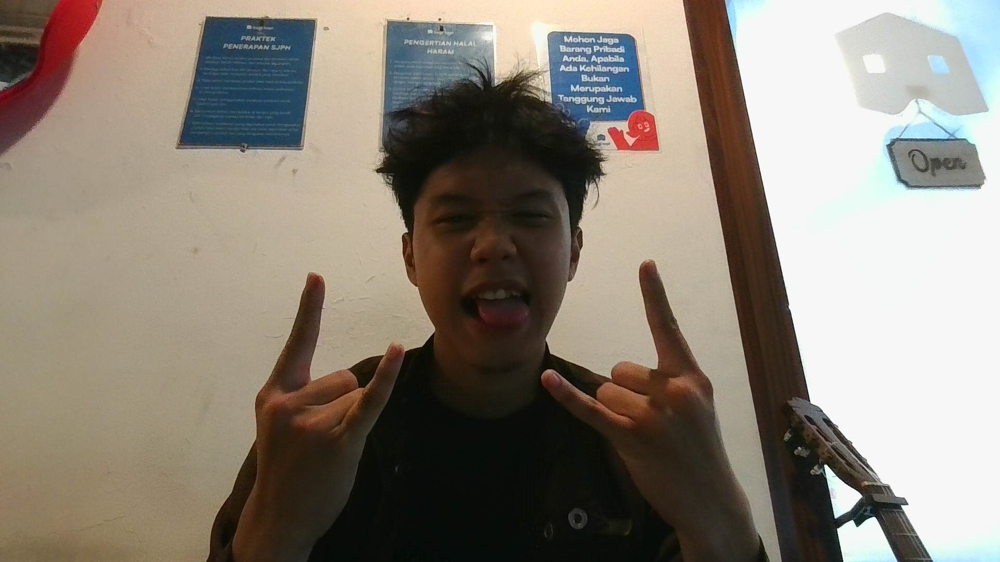

WELCOME TO MY CREATIVE SPACE
Farrel Tryardan Kusuma.
Vocalist, Multi-Instrumentalist & Visual Artist.
ABOUT

Seni adalah bahasa utama saya. Baik itu menghidupkan panggung melalui alunan musik, maupun menuangkan imajinasi ke atas kanvas.
Sebagai seorang frontman dan vokalis, saya terbiasa membangun energi penonton. Namun, kecintaan saya pada musik tidak berhenti di vokal; saya menguasai berbagai instrumen band—mulai dari memetik gitar, mencabik bass, hingga menjaga ketukan drum—untuk memahami harmoni lagu secara utuh.
Selain tampil secara live, saya juga sangat menikmati proses eksplorasi di balik layar, mengulik proses mixing dan recording audio agar setiap instrumen terdengar menyatu sempurna. Di luar musik, saya menyalurkan ekspresi visual melalui hobi menggambar.
100%
PASSION FOR ART
ALL
BAND INSTRUMENTS
EXPERIENCE
Menggerakkan Komunitas dan Menghidupkan Panggung

Vice Chairman of Dapur Seni
📍 Organisasi Seni (Periode 2025/2026)
Dipercaya menjadi salah satu kemudi bagi komunitas kreatif mahasiswa. Bertanggung jawab mengarahkan visi artistik, mengelola acara kesenian, serta menyediakan ruang aman bagi talenta muda kampus untuk mengekspresikan passion mereka di bidang musik dan seni rupa.

Live Music Performer
📍 Pre-Event Wagufest (Japanese Event)
Membawa energi J-Pop dan J-Rock ke atas panggung! Dipercaya mengisi acara dengan setlist khusus untuk pecinta kultur pop Jepang. Pengalaman ini sangat berkesan karena menuntut adaptasi genre yang spesifik dan kemampuan membangun hype bersama *crowd* yang antusias.

Routine Campus Performer
📍 Lingkungan Kampus UIN Syarif Hidayatullah Jakarta
Menjadi penampil langganan di berbagai gigs dan pentas seni kampus. Konsistensi manggung di area ini memperkuat stage presence saya sebagai *frontman* sekaligus membangun koneksi erat dengan skena musik mahasiswa lokal.

Acoustic & Full-Band Session
📍 Bagi Kopi Jombang & Kopi Kelawai
Tampil sebagai *performer* reguler dan bintang tamu di skena kafe lokal. Bertugas menghidupkan suasana akhir pekan melalui interaksi yang hangat, serta beradaptasi secara langsung meracik sound dan instrumen di atas panggung.
SKILLS
🎙️ Lead Vocal & Stage Presence
Mampu membawakan lagu dengan penjiwaan kuat dan mengatur dinamika panggung agar audiens tetap terhubung dengan energi lagu yang dibawakan.
🎸 Multi-Instrumentalist
Tidak hanya bernyanyi, saya mampu mengisi berbagai posisi dalam format band penuh, termasuk bermain Gitar, Bass, Drum, dan Keyboard.
🎛️ Audio Production
Memiliki pemahaman dasar yang kuat dalam meracik tata suara, mengoperasikan mixer, dan proses recording agar hasil suara memanjakan telinga.
🎨 Visual Art & Drawing
Menyeimbangkan seni suara dengan seni visual melalui ilustrasi dan gambar, yang seringkali menjadi inspirasi visual untuk identitas musik saya.